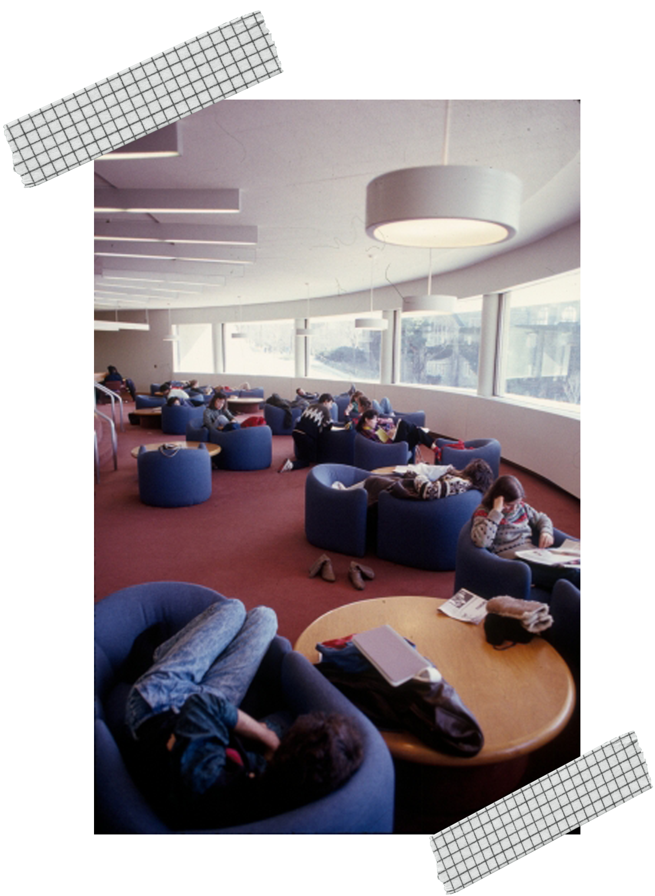
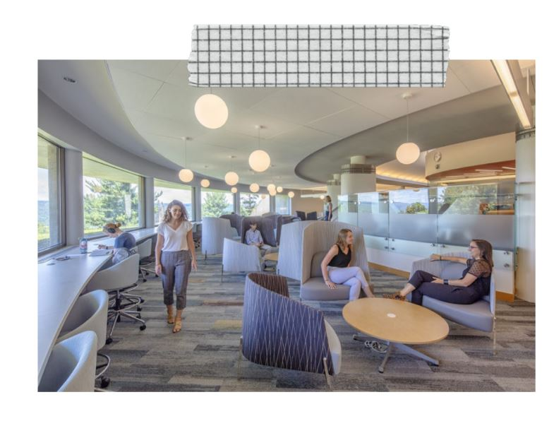
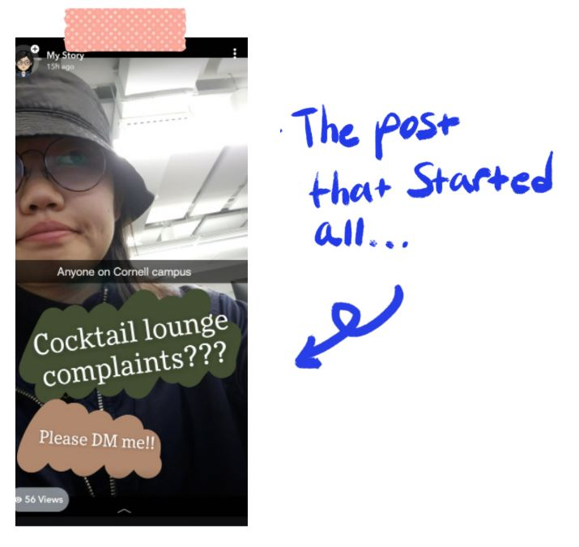
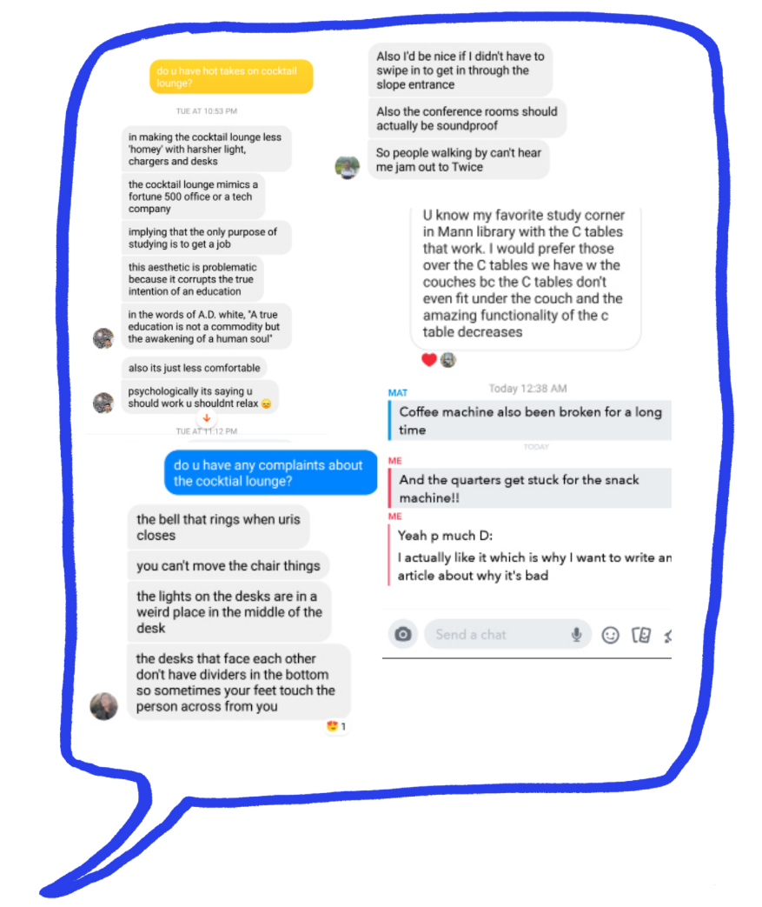
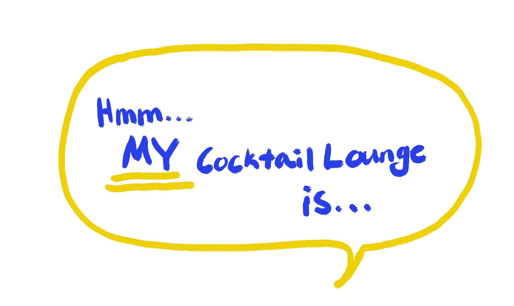

Cocktail Lounge
Jennifer Lee
If it is your first, second, or third year at Cornell, you have
not seen Cocktail Lounge before her glow-up. Created in
1982, the Cocktail Lounge is a home for students with
questionable sleeping habits. The 24/7 study lounge is
an essential contribution to the Cornell student lifestyle
as it is conveniently located in the middle of Collegetown,
West Campus, and North Campus-- the locations of the
most popular student residencies. Not only is it close to
home, but also the Cocktail Lounge’s proximity to the
libraries allow students to grab a quick coffee and bagel
from Libe Cafe or even some popcorn to a three-course
meal from Willard Straight Hall for a study break.
However, this piece isn’t an advertisement for the
lounge. As a sophomore in the College of Engineering, my
freshman year was filled with more hours exploring the
iconic chain of Engineering buildings, Upson-Duffield-
Phillips, and grabbing some ramen at Trillium after my CS
1110 lecture. Furthermore my nights were spent in the
lounges of Court-Kay Bauer, spoiled by the AC, AC and AC.

What was the old Cocktail lounge like?
Correct me if I’m wrong, but from my research
the Cocktail Lounge was the SPOT for night
owls. The lounge was filled with noises of
opening chips bags, whispers of late night
confessions, and the constant in and outflow
of students studying before or after some
Collegetown parties. She was homey and
relaxed allowing students to feel comfortable,
napping, eating, talking, etc. She lived up to her
name minus the alcohol.

What is the new Cocktail Lounge like?
This time Facebook message me if I’m wrong,
but from my personal experience the Cocktail
Lounge now does a better job of fostering
a clinical space, but yes, it does get loud
sometimes. I personally love the Cocktail
Lounge because I am not the quietest person
on earth especially if my friends are just a desk
away. The location is so convenient (close to
where I work, live, and study).

It is fairly close to
the Engineering Quad, but far enough so I don’t
coincidentally run into everyone I know. The
Cocktail Lounge’s minimalist, chic, new-decade
style is equivalent to that of a sheltered college
freshman going to 20 O-week parties with their
O-Week friends that they’re never going to talk
to again. Similar to the lounge, that freshman
can be considered an icon living their full lives
by some and the rock bottom of humanity by
others.
No hate, honestly. I love the Cocktail Lounge.
I’m there all the time. HMU my hours are 3-8 AM
Monday, Tuesday, Wednesday, Thursday, Friday
(if they’re open after cleaning), Saturday, and
Sunday. I’m an Asian girl with round glasses,
who looks like an international student, but
speaks like she’s been living in America for
more than her lifespan.
As a previous worshipper and lover of
the Cocktail Lounge, I did not understand
the controversy people had with the new
renovations. So I uploaded onto my SnapChat
and Instagram story for my biggest fans to
reply to me. I had to filter through SO many
results I spent HOURS on my app.
Here is what I uploaded (very professional I
know, I’m basically a full blown journalist):


So why did they do all this?
Apparently the designers have taken
student feedback when choosing the
furniture, aiming to find a balance between
uncomfortable versus comfortable
furniture-- comfortable enough so there
is no pain, but uncomfortable so the
students do not fall asleep.
In conclusion, the cocktail lounge will not
be able to satisfy all students unless it
becomes 20 different study spaces at
once, but optimizing the campus so that
there is somewhere on campus where
everyone can go is the best.

Try designing yours!
Any public space will not be a one-size-
fits-all sort of situation. That is like having
pants for everyone to share and wear. The
pants will be too long, fit too tight, fit too
loose, too short, blah blah blah. Just like
how the cocktail lounge is too loud, too
studious, too clinical, too blah blah blah.
What should happen is a flexible work
space. Something that is interchangeable
and flexible so it can accommodate the
student who can only work in silent spaces
and also accomodate the student who
likes having noise as a sort of white noise.